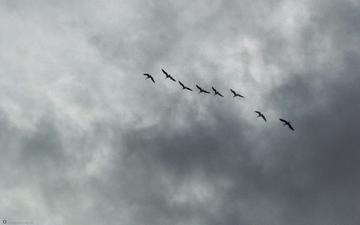
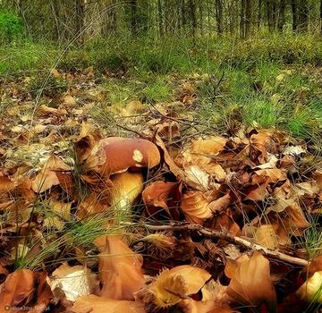
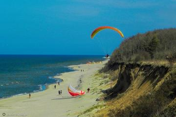
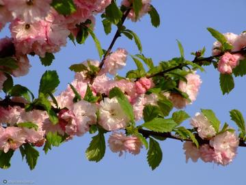
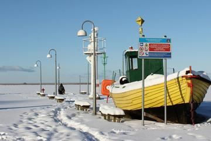
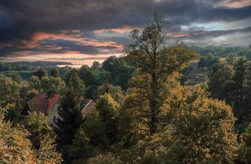
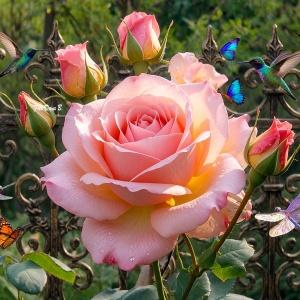

Wielka wytwórnia rodzinnych obrazów przedstawia
SENSACJA!WSTĘP WOLNYTYLKO U NAS
dana3ma · Szczecin · natura z humorem
Uwaga, uwaga! Przed Państwem pokazy zdjęć z floga Danuty — ptaki, makro, pejzaże, przyroda, okolice Szczecina, Dolny Śląsk oraz humor i wyobraźnia AI. Wybierz temat, wciśnij start i oglądaj jak w amerykańskiej reklamie: złote ramki, damski głos i muzyczka pitu-pitu.
Każdy pokaz ma własny link — wygodnie do Facebooka, floga i Pięknej Epoki.

🐦 Ptaki Skrzydlate portrety i wodne spotkania · 50 zdjęć Oglądaj pokaz ➜
🌸 Makro Motyle, kwiaty i świat w zbliżeniu · 42 zdjęć Oglądaj pokaz ➜
🌄 Pejzaże Horyzonty, niebo i spokojne widoki · 54 zdjęć Oglądaj pokaz ➜
🦌 Przyroda i zwierzęta Las, łąka i czworonożni bohaterowie · 96 zdjęć Oglądaj pokaz ➜
🏛️ Szczecin i okolice Miasto, Zachodniopomorskie, architektura · 112 zdjęć Oglądaj pokaz ➜
💎 Dolny Śląsk Wędrówki, wspomnienia i skarby regionu · 50 zdjęć Oglądaj pokaz ➜
✨ Humor i wyobraźnia Grafika AI, żarty dnia i odlotowe kadry · 61 zdjęć Oglądaj pokaz ➜